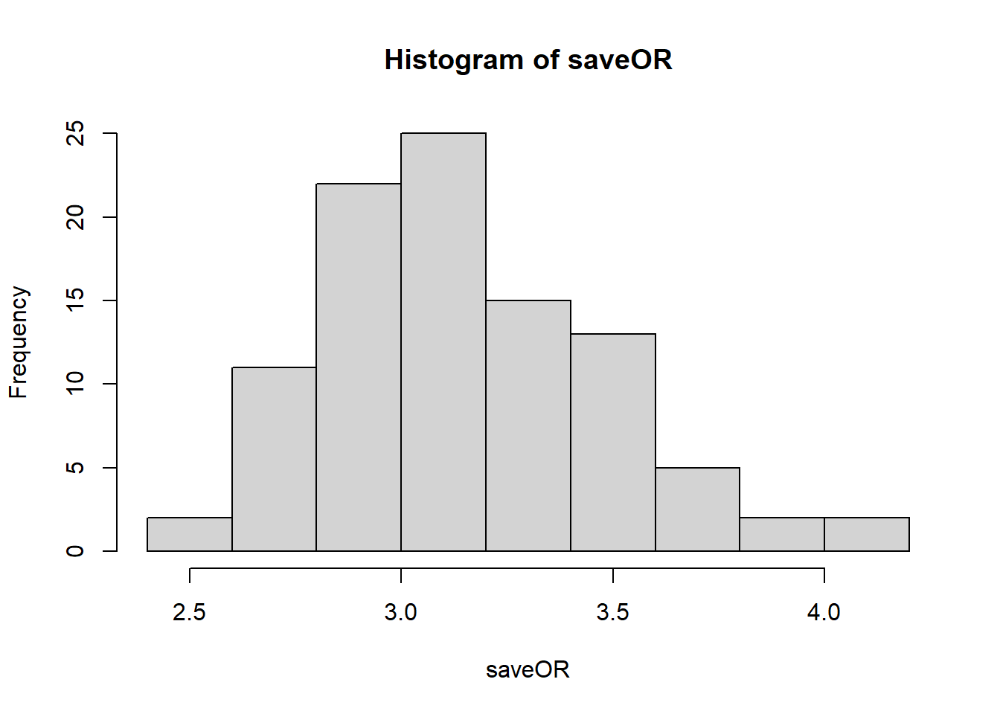

Chapter 3 Package
Using the plasmode package. See more details here.
# install.packages(c('glm2', 'arm', 'lme4', 'epiDisplay'))
# install.packages(
# "https://cran.r-project.org/src/contrib/Archive/Plasmode/Plasmode_0.1.0.tar.gz",
# repos = NULL, type = "source"
# )
require(Plasmode)nSim <- 100
formulaOut <- as.formula(paste0("death ~ swang1 +",
paste(vars, collapse = "+")))
#fity <- glm(paste0("death ~ swang1 +", paste(vars,
# collapse = "+")), family = binomial, data = rhc)
simdata.obj <- PlasmodeBin(formulaOut,
#objectOut=fity,
data=rhc,
idVar="id",
effectOR =3,
nsim=nSim,
size=3000,
eventRate=0.65,
exposedPrev=0.38)## Deviance = 6096.413 Iterations - 1
## Deviance = 6052.406 Iterations - 2
## Deviance = 6051.25 Iterations - 3
## Deviance = 6051.248 Iterations - 4
## Deviance = 6051.248 Iterations - 5simdata <- simdata.obj$Sim_Data
saveOR <- NULL
for (i in 1:nSim){
plasmodeData.i <- join(data.frame(id=simdata[,i],
EVENT=simdata[,i+nSim]),
rhc, by="id", type="left")
estORx <- tryCatch(exp(summary(glm(as.formula(paste0("EVENT", "~",
exposure, "+",
paste(vars, collapse = "+"))),
family=binomial(link="logit"),
data=plasmodeData.i))$coef[exposure,"Estimate"]),
error = function(e) { NA } )
saveOR <- c(estORx,saveOR)
cat("iteration", i, "event rate =",
round(table(plasmodeData.i$EVENT)[2]/length(plasmodeData.i$EVENT),2),
"exposure prevalence =",
round(table(plasmodeData.i$swang1)[2]/length(plasmodeData.i$swang1),2),
"OR =", round(estORx,2),
"cumulative mean OR=",
round(mean(saveOR, na.rm = TRUE),2),"\n")
}## iteration 1 event rate = 0.65 exposure prevalence = 0.38 OR = 3.21 cumulative mean OR= 3.21
## iteration 2 event rate = 0.65 exposure prevalence = 0.38 OR = 3.08 cumulative mean OR= 3.14
## iteration 3 event rate = 0.66 exposure prevalence = 0.38 OR = 3.59 cumulative mean OR= 3.29
## iteration 4 event rate = 0.64 exposure prevalence = 0.38 OR = 3.43 cumulative mean OR= 3.33
## iteration 5 event rate = 0.64 exposure prevalence = 0.38 OR = 3.02 cumulative mean OR= 3.26
## iteration 6 event rate = 0.65 exposure prevalence = 0.38 OR = 2.79 cumulative mean OR= 3.19
## iteration 7 event rate = 0.65 exposure prevalence = 0.38 OR = 2.95 cumulative mean OR= 3.15
## iteration 8 event rate = 0.64 exposure prevalence = 0.38 OR = 2.53 cumulative mean OR= 3.07
## iteration 9 event rate = 0.66 exposure prevalence = 0.38 OR = 3.17 cumulative mean OR= 3.09
## iteration 10 event rate = 0.64 exposure prevalence = 0.38 OR = 2.83 cumulative mean OR= 3.06
## iteration 11 event rate = 0.66 exposure prevalence = 0.38 OR = 3.33 cumulative mean OR= 3.08
## iteration 12 event rate = 0.65 exposure prevalence = 0.38 OR = 2.57 cumulative mean OR= 3.04
## iteration 13 event rate = 0.65 exposure prevalence = 0.38 OR = 3.42 cumulative mean OR= 3.07
## iteration 14 event rate = 0.64 exposure prevalence = 0.38 OR = 3 cumulative mean OR= 3.07
## iteration 15 event rate = 0.64 exposure prevalence = 0.38 OR = 2.74 cumulative mean OR= 3.04
## iteration 16 event rate = 0.65 exposure prevalence = 0.38 OR = 2.9 cumulative mean OR= 3.03
## iteration 17 event rate = 0.65 exposure prevalence = 0.38 OR = 3.16 cumulative mean OR= 3.04
## iteration 18 event rate = 0.64 exposure prevalence = 0.38 OR = 3.04 cumulative mean OR= 3.04
## iteration 19 event rate = 0.65 exposure prevalence = 0.38 OR = 3.34 cumulative mean OR= 3.06
## iteration 20 event rate = 0.67 exposure prevalence = 0.38 OR = 3.03 cumulative mean OR= 3.06
## iteration 21 event rate = 0.64 exposure prevalence = 0.38 OR = 3.12 cumulative mean OR= 3.06
## iteration 22 event rate = 0.66 exposure prevalence = 0.38 OR = 2.9 cumulative mean OR= 3.05
## iteration 23 event rate = 0.64 exposure prevalence = 0.38 OR = 3.69 cumulative mean OR= 3.08
## iteration 24 event rate = 0.65 exposure prevalence = 0.38 OR = 2.81 cumulative mean OR= 3.07
## iteration 25 event rate = 0.64 exposure prevalence = 0.38 OR = 3.14 cumulative mean OR= 3.07
## iteration 26 event rate = 0.64 exposure prevalence = 0.38 OR = 3.28 cumulative mean OR= 3.08
## iteration 27 event rate = 0.67 exposure prevalence = 0.38 OR = 3.12 cumulative mean OR= 3.08
## iteration 28 event rate = 0.65 exposure prevalence = 0.38 OR = NA cumulative mean OR= 3.08
## iteration 29 event rate = 0.66 exposure prevalence = 0.38 OR = 3.4 cumulative mean OR= 3.09
## iteration 30 event rate = 0.65 exposure prevalence = 0.38 OR = 3.17 cumulative mean OR= 3.1
## iteration 31 event rate = 0.64 exposure prevalence = 0.38 OR = 3.12 cumulative mean OR= 3.1
## iteration 32 event rate = 0.65 exposure prevalence = 0.38 OR = 2.78 cumulative mean OR= 3.09
## iteration 33 event rate = 0.65 exposure prevalence = 0.38 OR = 2.94 cumulative mean OR= 3.08
## iteration 34 event rate = 0.66 exposure prevalence = 0.38 OR = 3.4 cumulative mean OR= 3.09
## iteration 35 event rate = 0.65 exposure prevalence = 0.38 OR = 2.97 cumulative mean OR= 3.09
## iteration 36 event rate = 0.65 exposure prevalence = 0.38 OR = 2.95 cumulative mean OR= 3.08
## iteration 37 event rate = 0.65 exposure prevalence = 0.38 OR = 2.94 cumulative mean OR= 3.08
## iteration 38 event rate = 0.64 exposure prevalence = 0.38 OR = 3.14 cumulative mean OR= 3.08
## iteration 39 event rate = 0.66 exposure prevalence = 0.38 OR = 3.06 cumulative mean OR= 3.08
## iteration 40 event rate = 0.65 exposure prevalence = 0.38 OR = 2.8 cumulative mean OR= 3.07
## iteration 41 event rate = 0.64 exposure prevalence = 0.38 OR = 4.05 cumulative mean OR= 3.1
## iteration 42 event rate = 0.65 exposure prevalence = 0.38 OR = 2.9 cumulative mean OR= 3.09
## iteration 43 event rate = 0.64 exposure prevalence = 0.38 OR = 3.24 cumulative mean OR= 3.1
## iteration 44 event rate = 0.66 exposure prevalence = 0.38 OR = 2.67 cumulative mean OR= 3.09
## iteration 45 event rate = 0.65 exposure prevalence = 0.38 OR = 3.06 cumulative mean OR= 3.09
## iteration 46 event rate = 0.64 exposure prevalence = 0.38 OR = 2.97 cumulative mean OR= 3.08
## iteration 47 event rate = 0.66 exposure prevalence = 0.38 OR = 2.96 cumulative mean OR= 3.08
## iteration 48 event rate = 0.65 exposure prevalence = 0.38 OR = 3.23 cumulative mean OR= 3.08
## iteration 49 event rate = 0.64 exposure prevalence = 0.38 OR = 2.87 cumulative mean OR= 3.08
## iteration 50 event rate = 0.65 exposure prevalence = 0.38 OR = 3.09 cumulative mean OR= 3.08
## iteration 51 event rate = 0.66 exposure prevalence = 0.38 OR = 3.3 cumulative mean OR= 3.08
## iteration 52 event rate = 0.64 exposure prevalence = 0.38 OR = 3.01 cumulative mean OR= 3.08
## iteration 53 event rate = 0.66 exposure prevalence = 0.38 OR = NA cumulative mean OR= 3.08
## iteration 54 event rate = 0.64 exposure prevalence = 0.38 OR = 3.28 cumulative mean OR= 3.09
## iteration 55 event rate = 0.65 exposure prevalence = 0.38 OR = 3.12 cumulative mean OR= 3.09
## iteration 56 event rate = 0.65 exposure prevalence = 0.38 OR = 2.72 cumulative mean OR= 3.08
## iteration 57 event rate = 0.66 exposure prevalence = 0.38 OR = 3.17 cumulative mean OR= 3.08
## iteration 58 event rate = 0.65 exposure prevalence = 0.38 OR = 2.78 cumulative mean OR= 3.08
## iteration 59 event rate = 0.65 exposure prevalence = 0.38 OR = 2.92 cumulative mean OR= 3.07
## iteration 60 event rate = 0.66 exposure prevalence = 0.38 OR = 3.12 cumulative mean OR= 3.08
## iteration 61 event rate = 0.65 exposure prevalence = 0.38 OR = 3.01 cumulative mean OR= 3.07
## iteration 62 event rate = 0.64 exposure prevalence = 0.38 OR = 3.24 cumulative mean OR= 3.08
## iteration 63 event rate = 0.66 exposure prevalence = 0.38 OR = 3.56 cumulative mean OR= 3.08
## iteration 64 event rate = 0.68 exposure prevalence = 0.38 OR = 2.66 cumulative mean OR= 3.08
## iteration 65 event rate = 0.66 exposure prevalence = 0.38 OR = 2.76 cumulative mean OR= 3.07
## iteration 66 event rate = 0.65 exposure prevalence = 0.38 OR = 3.44 cumulative mean OR= 3.08
## iteration 67 event rate = 0.64 exposure prevalence = 0.38 OR = 3.5 cumulative mean OR= 3.08
## iteration 68 event rate = 0.66 exposure prevalence = 0.38 OR = 3.37 cumulative mean OR= 3.09
## iteration 69 event rate = 0.66 exposure prevalence = 0.38 OR = 3.58 cumulative mean OR= 3.1
## iteration 70 event rate = 0.67 exposure prevalence = 0.38 OR = 2.9 cumulative mean OR= 3.09
## iteration 71 event rate = 0.66 exposure prevalence = 0.38 OR = 3.93 cumulative mean OR= 3.11
## iteration 72 event rate = 0.65 exposure prevalence = 0.38 OR = 2.7 cumulative mean OR= 3.1
## iteration 73 event rate = 0.66 exposure prevalence = 0.38 OR = 3.65 cumulative mean OR= 3.11
## iteration 74 event rate = 0.65 exposure prevalence = 0.38 OR = 3.12 cumulative mean OR= 3.11
## iteration 75 event rate = 0.64 exposure prevalence = 0.38 OR = 3.83 cumulative mean OR= 3.12
## iteration 76 event rate = 0.63 exposure prevalence = 0.38 OR = 3.52 cumulative mean OR= 3.12
## iteration 77 event rate = 0.66 exposure prevalence = 0.38 OR = 2.6 cumulative mean OR= 3.12
## iteration 78 event rate = 0.64 exposure prevalence = 0.38 OR = 3.5 cumulative mean OR= 3.12
## iteration 79 event rate = 0.65 exposure prevalence = 0.38 OR = 3.26 cumulative mean OR= 3.12
## iteration 80 event rate = 0.65 exposure prevalence = 0.38 OR = 3.64 cumulative mean OR= 3.13
## iteration 81 event rate = 0.64 exposure prevalence = 0.38 OR = 2.88 cumulative mean OR= 3.13
## iteration 82 event rate = 0.65 exposure prevalence = 0.38 OR = 2.86 cumulative mean OR= 3.12
## iteration 83 event rate = 0.65 exposure prevalence = 0.38 OR = 3.3 cumulative mean OR= 3.13
## iteration 84 event rate = 0.65 exposure prevalence = 0.38 OR = 3.2 cumulative mean OR= 3.13
## iteration 85 event rate = 0.65 exposure prevalence = 0.38 OR = 3.19 cumulative mean OR= 3.13
## iteration 86 event rate = 0.65 exposure prevalence = 0.38 OR = 2.88 cumulative mean OR= 3.12
## iteration 87 event rate = 0.64 exposure prevalence = 0.38 OR = 3.68 cumulative mean OR= 3.13
## iteration 88 event rate = 0.64 exposure prevalence = 0.38 OR = 4.16 cumulative mean OR= 3.14
## iteration 89 event rate = 0.64 exposure prevalence = 0.38 OR = 2.96 cumulative mean OR= 3.14
## iteration 90 event rate = 0.65 exposure prevalence = 0.38 OR = 2.73 cumulative mean OR= 3.14
## iteration 91 event rate = 0.66 exposure prevalence = 0.38 OR = NA cumulative mean OR= 3.14
## iteration 92 event rate = 0.66 exposure prevalence = 0.38 OR = 3.65 cumulative mean OR= 3.14
## iteration 93 event rate = 0.65 exposure prevalence = 0.38 OR = 3.08 cumulative mean OR= 3.14
## iteration 94 event rate = 0.65 exposure prevalence = 0.38 OR = 3.44 cumulative mean OR= 3.14
## iteration 95 event rate = 0.65 exposure prevalence = 0.38 OR = 3.43 cumulative mean OR= 3.15
## iteration 96 event rate = 0.64 exposure prevalence = 0.38 OR = 2.98 cumulative mean OR= 3.15
## iteration 97 event rate = 0.64 exposure prevalence = 0.38 OR = 2.81 cumulative mean OR= 3.14
## iteration 98 event rate = 0.64 exposure prevalence = 0.38 OR = 3.27 cumulative mean OR= 3.14
## iteration 99 event rate = 0.65 exposure prevalence = 0.38 OR = 3.23 cumulative mean OR= 3.14
## iteration 100 event rate = 0.67 exposure prevalence = 0.38 OR = 3.48 cumulative mean OR= 3.15summary(saveOR)## Min. 1st Qu. Median Mean 3rd Qu. Max. NA's
## 2.535 2.902 3.121 3.148 3.335 4.165 3hist(saveOR)